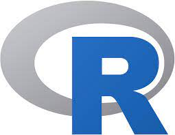

inicio (home)
||
musicas para programação
||
Aulas gratis
||
Planos
||
Contato
||
Aulas de java
Java é uma linguagem de programação amplamente usada para codificar aplicações Web. Ela tem sido uma escolha popular entre os desenvolvedores há mais de duas décadas, com milhões de aplicações Java em uso hoje. Java é uma linguagem multiplataforma, orientada a objetos e centrada em rede que pode ser usada como uma plataforma em si. É uma linguagem de programação rápida, segura e confiável para codificar tudo, desde aplicações móveis e software empresarial até aplicações de big data e tecnologias do servidor.
Aulas de Python
O Python é uma linguagem de programação amplamente usada em aplicações da Web, desenvolvimento de software, ciência de dados e machine learning (ML). Os desenvolvedores usam o Python porque é eficiente e fácil de aprender e pode ser executada em muitas plataformas diferentes. O software Python pode ser baixado gratuitamente, integra-se bem a todos os tipos de sistema e agiliza o desenvolvimento.
Aulas de C#
A linguagem C# é uma das mais relevantes e requisitadas da atualidade. Trata-se de uma poderosa tecnologia para aplicações diversas e, por isso, é fundamental para se ter no currículo. É crucial entender a linguagem, aprender a programar com ela e descobrir suas nuances e diferenças com relação a outros padrões.

Aulas de R
É uma linguagem estatística e gráfica, multi-paradigma orientada a objetos, programação funcional, dinâmica, fracamente tipada, voltada à manipulação, análise e visualização de dados. A linguagem R é considerada como uma das melhores ferramentas para esses fins, além de ser fácil de aprender até mesmo por quem não tem familiaridade com programação.